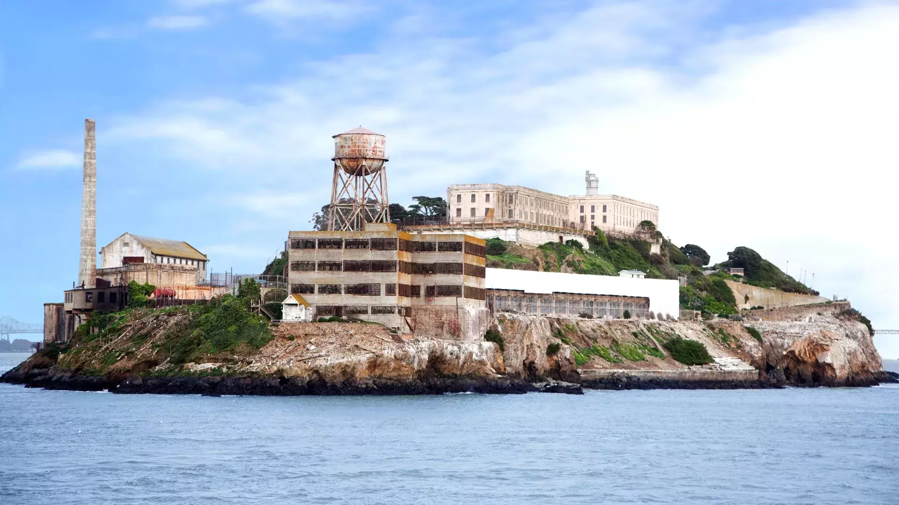
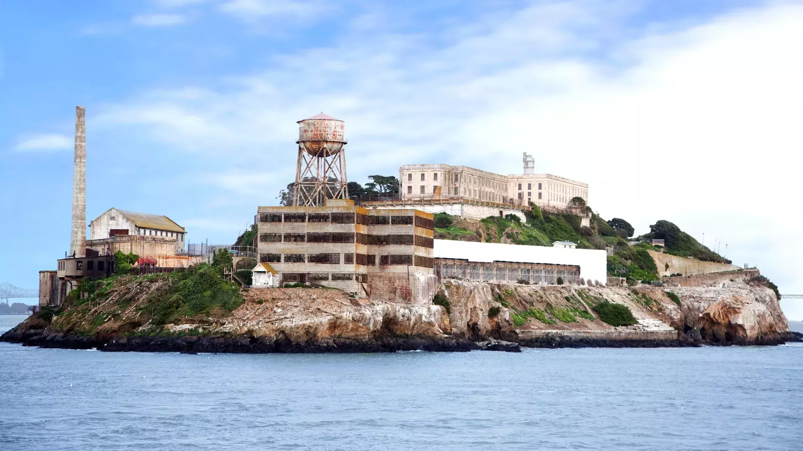

New York City
New York, often referred to as "The Empire State," is a dynamic and iconic state located in the northeastern region of the United States.


Places to visit ✈
- Statue of Liberty
- Central Park
- Manhattan
San Francisco
San Francisco, nestled along the picturesque California coast, is a vibrant and eclectic city known for its iconic landmarks, diverse neighborhoods, and rich cultural heritage. From the iconic Golden Gate Bridge and historic cable cars to the bustling Fisherman's Wharf and innovative culinary scene, San Francisco offers a unique blend of natural beauty, urban energy, and artistic flair that captivates visitors from around the world.
 

Places to visit ✈
- Golden Gate Bridge
- Alcatraz
- Ferry Building
London
London, the dynamic capital of the United Kingdom, is a city steeped in history, culture, and modernity. From the majestic Tower Bridge and regal Buckingham Palace to the bustling streets of Covent Garden and the vibrant nightlife of Soho, London offers a captivating blend of iconic landmarks, world-class museums, and diverse culinary experiences. With its rich tapestry of traditions and innovations, London is a global hub where past and present converge, inviting visitors to explore its endless charms and vibrant energy.


Places to visit ✈
- Big Ben
- Buckingham Palace
- London Eye